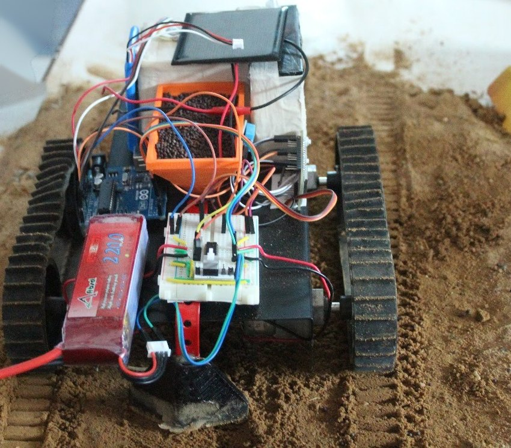
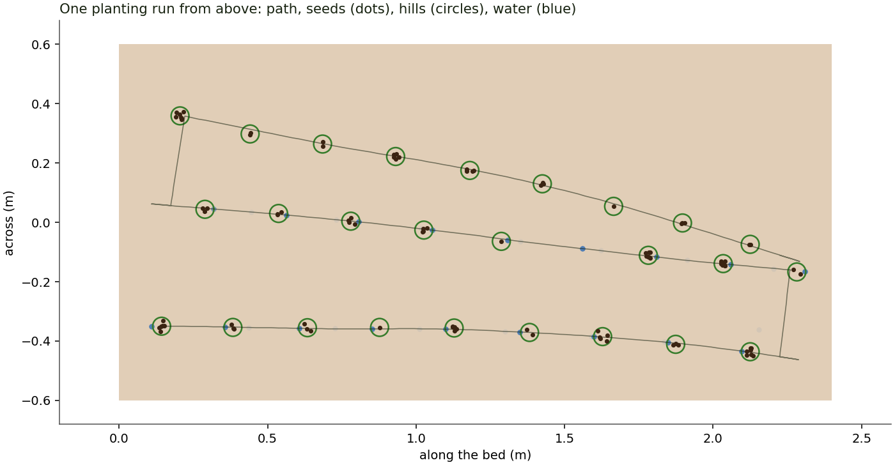
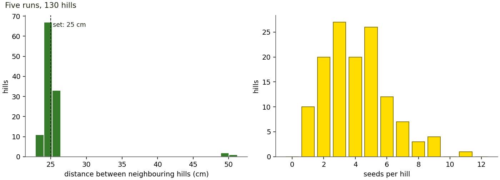

Tracked plantation robot · Arduino UNO + NodeMCU
FARM-ESeeds and waters a bed, row by row
A small tracked machine that drives a bed in serpentine rows, stops every 25 cm, drops a pinch of seed, waters it and moves on, while a phone on its Wi-Fi watches and steers. Everything on this page runs the robot's real firmware in your browser.
The machine
Tracks, a hopper, a tank and two boards
A steel deck on rubber tracks carries an orange 3D-printed seed hopper with a servo flap, a small water tank and pump, and an ultrasonic sensor looking down at the soil just ahead of the tracks. The Arduino UNO drives; the NodeMCU runs the Wi-Fi and the phone page.

What it does
Set on a bed, it learns how far away the soil is, then plants a hill, drives the set spacing, and plants again until the ground drops away ahead. There it backs off, turns, shifts one row gap and comes back down the next row. Temperature and humidity go to the phone, which can also drive it by hand.
Parts and pins
| Part | Job | Pins |
|---|---|---|
| Arduino UNO | tracks, seed flap, pump, sonar | D2 D4 D6 D7, D9, D12, A4 A5 |
| NodeMCU (ESP8266) | Wi-Fi access point, web, DHT11 | D2 (DHT), D5 D6 (link) |
| Link between boards | software UART, 19200 baud | UNO A0/A1 ↔ D6/D5 |
| 2 × 12 V geared motors | 200 rpm, one per track | through an H-bridge |
| SG90 servo | opens the hopper flap | D9 |
| 5 V pump, ~350 mL tank | waters each hill | D12 |
| HC-SR04 | is there ground ahead? | A4 trig, A5 echo |
| 3S LiPo, 2200 mAh | power, sensed for speed | A3 via 10k/3.3k |
How a tap becomes motion
Phone → Wi-Fi → NodeMCU → UART → UNO → tracks
Pick a stage to see what travels over it and how each hop keeps a command from getting lost.
UART
Select a stage above.
Live co-simulation
Field trial
The robot below is a simulated UNO and NodeMCU running the actual firmware, compiled to WebAssembly and joined by a software UART, on a tracked chassis with a battery, a seed hopper, a pump and a sonar. Change the bed or the settings and plant again.
Robot status
–The sonar sits 13 cm ahead of the robot's centre. Heading drifts a few degrees per row because the tracks slip a little differently; the robot has no gyro, so the sonar watching the bed's sides is what keeps it on. Model parameters (track speed, slip, pump flow, seed flow) are plausible for the prototype.
Drive it yourself
The phone in your hand
Join the robot's Wi-Fi and open 192.168.4.1: this is the page the NodeMCU serves, running here against a simulated robot. Hold an arrow to drive, press Plant to start a run, and watch the requests on the right.
The API behind the page
| Request | Does |
|---|---|
| /api/status | mode, state, hills, row, tank, ground, battery, air (JSON) |
| /api/cmd?c=auto | pause | stop | manual | start, pause, stop a run; switch to manual |
| /api/cmd?c=drive&d=F&ms=450 | drive for 450 ms; repeated while an arrow is held |
| /api/cmd?c=seed | water&ms= | one hill of seed; a timed squirt |
| /api/cmd?c=set&p=spacing&v=250 | settings, stored in the UNO's EEPROM |
Sensor lab
Is there ground under the sonar?
The HC-SR04 looks down just ahead of the tracks. Slide the robot toward the end of the bed and see how the firmware reads the echo.
Firmware decision
–
Distance is echo_us × c / 2, with the speed of sound c = 331.3 + 0.606 T m/s and T from the NodeMCU's DHT11. While standing still the UNO takes seven pings, and if they agree within 15 mm their median becomes the ground distance.
Moving forward, two readings more than 40 mm below that ground, or three missing echoes in a row, or no ping for 150 ms, mean "no ground ahead": the tracks brake at once. pulseIn() is capped at 6 ms (about 1 m), so a lost echo never turns into a number.
UART lab
On the wire between the boards
What crosses the two-wire link, bit by bit, and how the boards make sure every command arrives exactly once.
Stop-and-wait delivery
The NodeMCU sends one command at a time with a sequence number. The UNO acts on it and puts the number in its next telemetry line, about 20 ms later. No echo within 150 ms and the same frame goes out again; a repeat the UNO has already seen is acknowledged but not acted on twice. Raise the noise and watch.
Measured in simulation
Results
From python -m farmelab: five full planting runs on a 2.4 × 1.2 m table-top bed with default settings, plus targeted tests. Each figure is pinned by a test in tests/test_firmware.py.


Inside
Firmware
Two sketches: FarmeDrive on the UNO and FarmeLink on the NodeMCU. All decisions live in plain C++ cores that are unit-tested on a PC and run unmodified in the simulator above.
Planting state machine
Lit: the robot in the field trial, right now.The link protocol
One line per frame, readable in any serial monitor, checked with CRC-8. One command in flight at a time; the UNO echoes its sequence number in the next telemetry frame, or the NodeMCU sends it again. Repeats are recognised and ignored.
| Frame | Direction | Fields |
|---|---|---|
| $C,17,4,3,450*C4 | NodeMCU → UNO | command: seq, code, a, b |
| $H,280,62*.. | NodeMCU → UNO | heartbeat: air °C ×10, %RH |
| $T,17,3,2,24,55,..*.. | UNO → NodeMCU | telemetry: ack, state, mode, flags, ground mm, hills, row, tank mL, battery dV, fault |
Design
- Idle at power-up; plants only when asked.
- Stop, seed, water, move: hills at a set spacing, in serpentine rows.
- Measured water doses; the firmware tracks the tank and says when it is low.
- Edge detection against a learned ground distance, every 30 ms while moving, in manual mode too.
- Drive commands carry a hold time: if the phone goes quiet, the robot stops within half a second.
- Distances stretch with battery voltage; a low battery pauses the run.
- The web server never blocks; the Wi-Fi password lives in an untracked
secrets.h. - Settings in EEPROM with a CRC; a 1 s watchdog on the UNO.
Flash it
- UNO: open
firmware/FarmeDrivein the Arduino IDE, board Arduino UNO (Servo, SoftwareSerial and EEPROM are built in). 15.4 KB flash, 0.9 KB RAM. - NodeMCU: install the ESP8266 core and the DHTStable library, copy
secrets.example.htosecrets.h, set a password, openfirmware/FarmeLink, board NodeMCU 1.0. - Wire the link: NodeMCU D6 → UNO A0; UNO A1 → 1 kΩ → NodeMCU D5 → 2 kΩ → GND. Battery through 10 kΩ / 3.3 kΩ to A3.
- Join the FARM-E Wi-Fi and open
http://192.168.4.1.
Settings
| Setting | Default | Range |
|---|---|---|
| Hill spacing | 250 mm | 100–800 |
| Rows per run | 3 | 1–8 |
| Row gap | 300 mm | 150–600 |
| Water per hill | 20 mL | 0–60 |
| Seed flap open | 80 ms | 40–600 |
| Ground speed | 240 mm/s at 11.7 V | 60–600 |
| 90° turn | 910 ms | 200–3000 |
| Edge threshold | 40 mm | 15–200 |